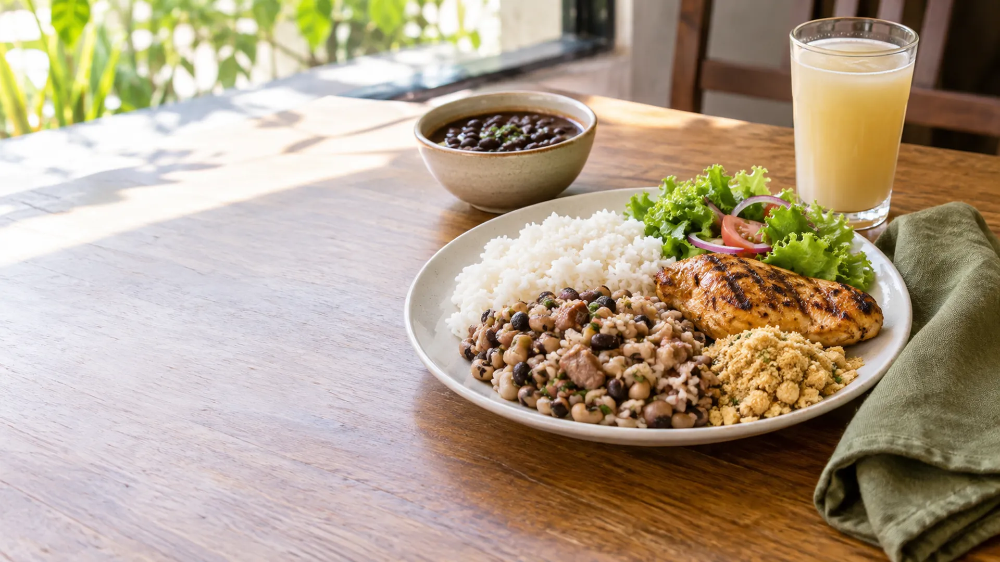
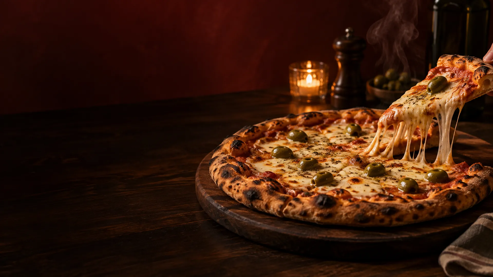
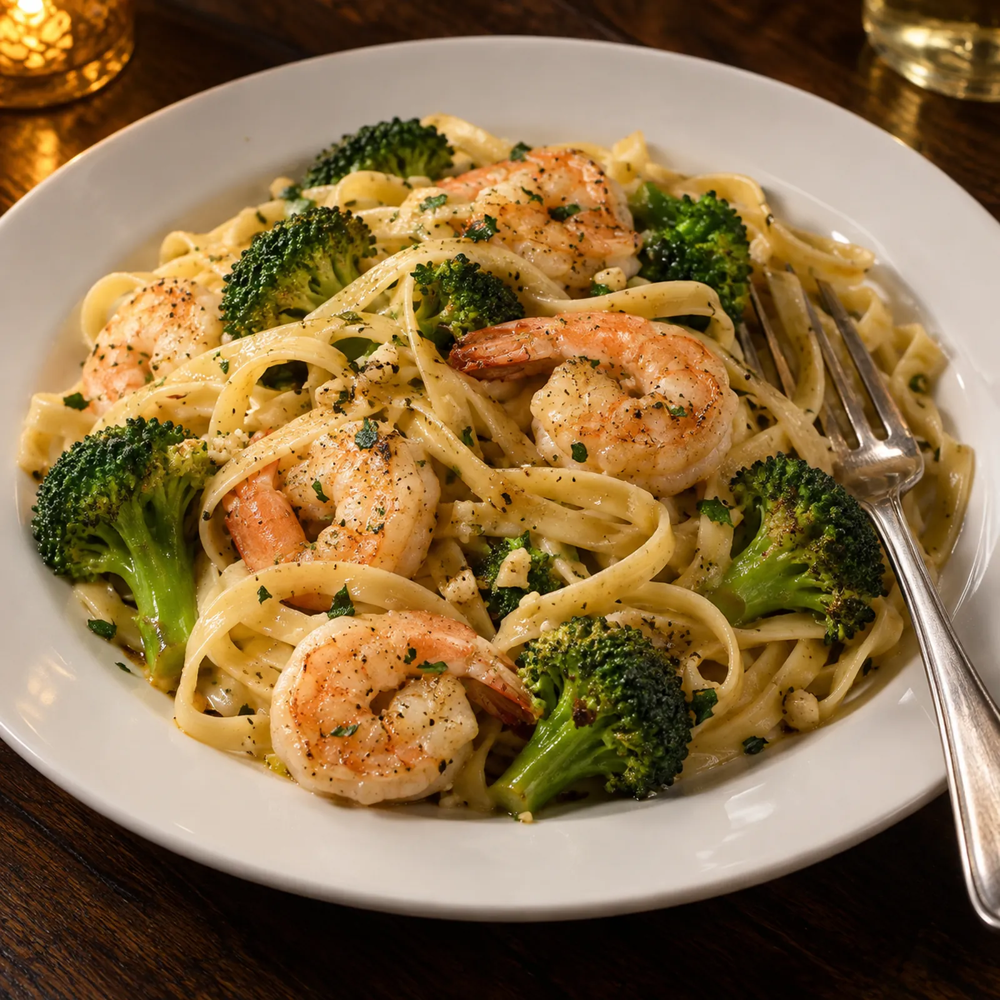
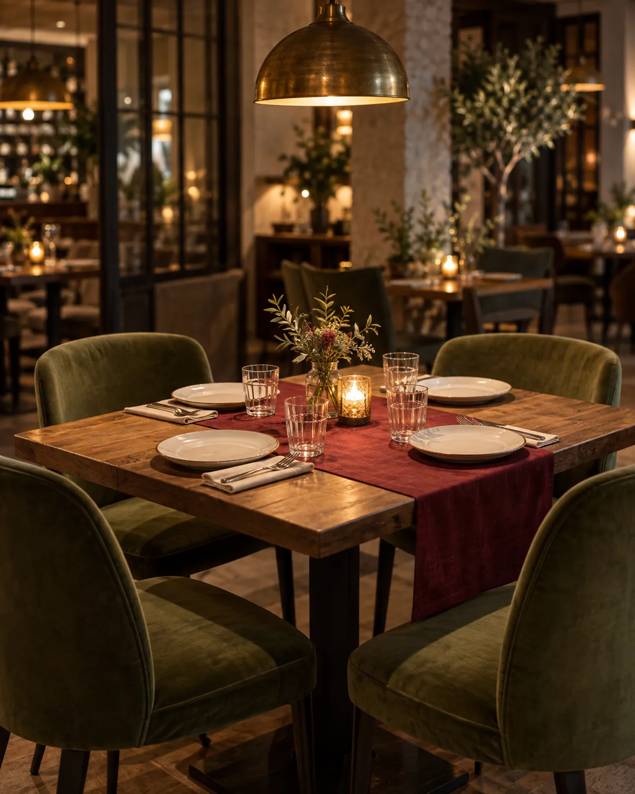

Maracanaú · Maranguape · desde 2007
Do almoço à última fatia.
Uma casa que muda de luz e não de endereço.
De dia, prato feito com escolha de proteína e acompanhamentos. De noite, forno aceso, massas e pizza. A Nobre diz que cria memórias à mesa desde 2007; o cardápio de cada unidade conta o resto.
Almoço da casa
Monte o prato: uma ou duas proteínas, arroz, baião ou arroz do chef, batata, farofa, feijão e salada. Com suco, se quiser.
Categorias do cardápio da unidade Maracanaú no MenuDino, consultado em 25/09/2026.
Ver cardápio de MaracanaúQuando o sol baixa, o forno sobe.
Uma pizza é uma mesa inteira dividida em oito.
Linhas Especial, Super, Nobre e Nestlé & Nobre, além de combos, hambúrguer artesanal, pastéis e massas no cardápio de Maranguape.
Ver cardápio de MaranguapeCategorias do MenuDino da unidade Maranguape, consultado em 25/09/2026.

Massa do chefe, para quem não é de pizza.
Fettuccine ou espaguete ao alho e óleo com camarão e brócolis está entre as massas publicadas no cardápio de Maracanaú. A disponibilidade no dia é confirmada pela casa.

Escolha a unidade
Maracanaú
R. 49, 37, Jereissati II, Maracanaú confirmar
Almoço da casa, pratos executivos e massas no cardápio publicado.
Pedidos e pagamentos acontecem nos cardápios oficiais (MenuDino) ou no WhatsApp de cada unidade. Horários: confirmar com a casa.